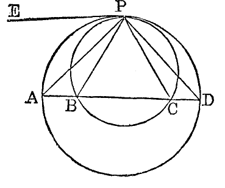
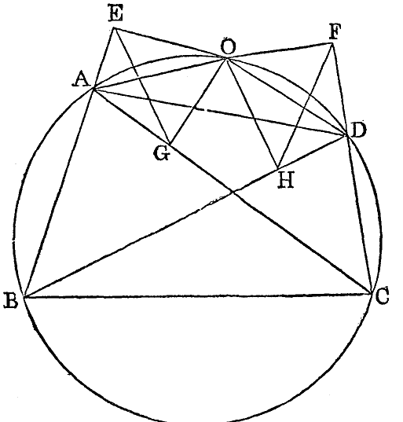
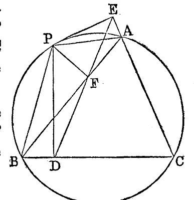
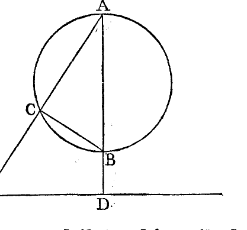
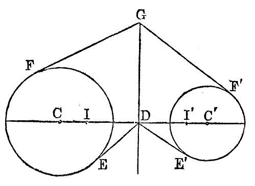
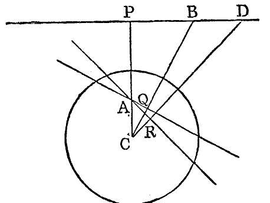
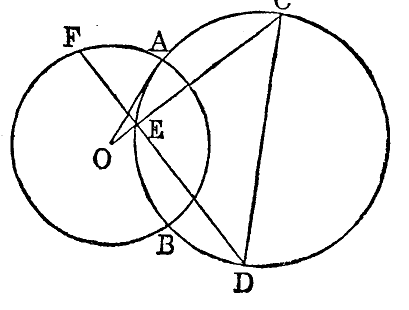

Book III, Section I: Additional Propositions¶
A Sequel to the First Six Books of the Elements of Euclid (5th ed., 1888, pp. 29–48)
f. 0055 · p. 29SECTION I.¶
ADDITIONAL PROPOSITIONS.¶
Prop. 1.—The two tangents drawn to a circle from any external point are equal.
Dem.—Let $PA, PB$ be the tangents, $O$ the centre of the $\odot$. Join $OA, OP, OB$; then $OP^2 = OA^2 + AP^2$ and $OP^2 = OB^2 + BP^2$; but $OA^2 = OB^2$; $\therefore AP^2 = BP^2$, and $AP = BP$.
Prop. 2.—If two circles touch at a point $P$, and from $P$ any two lines $PAB, PCD$ be drawn, cutting the circles in the points $A, B, C, D$, the lines $AC, BD$ joining the points of section are parallel.
Dem.—At $P$ draw the common tangent $PE$ to both $\odot\text{s}$; then $\angle EPA = PCA$ (xxxii.) and $\angle EPB = PDB$. Hence $\angle PCA = PDB$, and $AC$ is $\parallel$ to $BD$ (I. xxiii.).
Cor.—If the angle $APC$ be a right angle, $AC$ and $BD$ will be diameters of the $\odot\text{s}$, and then we have the
f. 0056 · p. 30
following important theorem. The lines drawn from the point of contact of two touching circles to the extremities of any diameter of one of them, will meet the other in points which will be the extremities of a parallel diameter.
Prop. 3.—If two circles touch at $P$, and any line $PAB$ cut both circles in $A$ and $B$, the tangents at $A$ and $B$ are parallel.
Dem.—Let the tangents at $A$ and $B$ meet the tangents at $P$ in the points $E$ and $F$. Now, since $AE = EP$ (1), the $\angle APE = PAE$. In like manner, the $\angle BPF = PBF$; $\therefore \angle PAE = PBF$, and $AE$ is $\parallel$ to $BF$. This Prop. may be inferred from (2), by supposing the lines $PAB, PCD$ to approach each other indefinitely; then $AC$ and $BD$ will be tangents.
Prop. 4.—If two circles touch each other at any point $P$, and any line cut the circles in the points $A, B, C, D$; then the angle $APB = CPD$.
Dem.—Draw a tangent $PE$ at $P$; then $\angle EPB = PCB$ (xxxii.) and $\angle EPA = PDA$. Hence, by subtraction, $\angle APB = CPD$.
Prop. 5.—If a circle touch a semicircle in $D$ and its diameter in $P$, and $PE$ be perpendicular to the diameter at $P$, the square on $PE$ is equal to twice the rectangle contained by the radii of the circles.
Dem.—Complete the circle, and produce $EP$ to meet it again in $G$. Let $C$ and $F$ be the centres; then the line $CF$ will pass through $D$. Let it meet the outside circle again in $H$.


f. 0057 · p. 31
Now, $EF \cdot FG = DF \cdot FH$ (xxxv.), and $PF^2 = DF^2$. Hence, by addition, making use of II. v., and II. iii., $EP^2 = DF \cdot DH = \text{twice rectangle contained by the radii}$.
Prop. 6.—If a circle $PGD$ touch a circle $ABC$ in $D$ and a chord $AB$ in $P$, and if $EF$ be perpendicular to $AB$ at its middle point, and at the side opposite to that of the circle $PGD$, the rectangle contained by $EF$ and the diameter of the circle $PGD$ is equal to the rectangle $AP \cdot PB$.
Dem.—Let $PG$ be at right $\angle\text{s}$ to $AB$, then $PG$ is the diameter of the $\odot PGD$. Join $DG, DP$, and produce them to meet the $\odot ABC$ in $C$ and $F$; then $CF$ is the diameter of the $\odot ABC$, and is $\parallel$ to $PG$ (2); $\therefore CF$ is $\perp$ to $AB$; hence it bisects $AB$ in $E$ (iii.). Through $F$ draw $FH \parallel$ to $AB$, and produce $GP$ to meet it in $H$. Now, since the $\angle\text{s } H$ and $D$ are right $\angle\text{s}$, a semicircle described on $GF$ will pass through the points $D$ and $H$. Hence $HP \cdot PG = FP \cdot PD = AP \cdot PB$ (xxxv.); but $HP = EF$; $\therefore EF \cdot PG = AP \cdot PB$.
This Prop. and its Demonstration will hold true when the $\odot\text{s}$ are external to each other.
Cor.—If $AB$ be the diameter of the $\odot ABC$, this Prop. reduces to the last.
Prop. 7.—To draw a common tangent to two circles.
Let $P$ be the centre of the greater $\odot$, $Q$ the centre of the less; with $P$ as centre, and a radius equal to the difference of the radii of the two $\odot\text{s}$, describe the $\odot IGH$; from $Q$ draw a tangent to this $\odot$, touching it at $H$.
f. 0058 · p. 32
Join $PH$, and produce it to meet the circumference of the larger $\odot$ in $E$. Draw $QF \parallel$ to $PE$. Join $EF$, which will be the common tangent required.
Dem.—The lines $HE$ and $QF$ are, from the construction, equal; and since they are $\parallel$, the fig. $HEFQ$ is a $\square$; $\therefore$ the $\angle PEF = PHQ = \text{right angle}$; $\therefore EF$ is a tangent at $E$; and since $\angle EFQ = EHQ = \text{right angle}$, $EF$ is a tangent at $F$. The tangent $EF$ is called a direct common tangent.
If with $P$ as centre, and a radius equal to the sum of the radii of the two given $\odot\text{s}$, we describe a $\odot$, we shall have a common tangent which will pass between the $\odot\text{s}$, and one which is called a transverse common tangent.
Prop. 8.—If a line passing through the centres of two circles cut them in the points $A, B, C, D$, respectively; then the square of their direct common tangent is equal to the rectangle $AC \cdot BD$.
Dem.—We have (see last fig.) $AI = CQ$; to each add $IC$, and we get $AC = IQ$. In like manner, $BD = GQ$. Hence $AC \cdot BD = IQ \cdot QG = EF^2$.
Cor. 1.—If the two $\odot\text{s}$ touch, the square of their common tangent is equal to the rectangle contained by their diameters.
Cor. 2.—The square of the transverse common tangent of the two $\odot\text{s} = AD \cdot BC$.
Cor. 3.—If $ABC$ be a semicircle, $PE$ a $\perp$ to $AB$ from any point $P$, $CQD$ a $\odot$ touching $PE$, the semicircle $ACB$, and the semicircle on $PB$; then, if $QR$ be the diameter of $CQD$, $AB \cdot QR = EP^2$.
Dem.—$PB \cdot QR = PQ^2$ (Cor. 1) and $AP \cdot QR = EP^2 - PQ^2$ (6); therefore, by addition, $AB \cdot QR = EP^2$.
Cor. 4.—If two $\odot\text{s}$ be described to touch an ordinate
f. 0059 · p. 33
of a semicircle, the semicircle itself, and the semicircles on the segments of the diameter, they will be equal to one another.
Prop. 9.—In equiangular triangles the rectangles under the non-corresponding sides about equal angles are equal to one another.
Dem.—Let the equiangular $\triangle\text{s}$ be $ABO, DCO$, and let them be placed so that the equal $\angle\text{s}$ at $O$ may be vertically opposite, and that the non-corresponding sides $AO, CO$ may be in one right line; then the non-corresponding sides $BO, OD$ shall be in one right line. Now, since the $\angle ABD = ACD$, the four points $A, B, C, D$ are concyclic (in the circumference of the same $\odot$). Hence the rectangle $AO \cdot OC = \text{rectangle } BO \cdot OD$ (xxxv.).
Prop. 10.—The rectangle contained by the perpendiculars from any point $O$ in the circumference of a circle on two tangents $AC, BC$, is equal to the square of the perpendicular from the same point on their chord of contact $AB$.
Dem.—Let the $\perp\text{s}$ be $OD, OE, OF$. Join $OA, OB, EF, DF$. Now, since the $\angle\text{s } ODB, OFB$, are right, the quadrilateral $ODBF$ is inscribed in a $\odot$. In like manner, the quadrilateral $OEAF$ is inscribed in a $\odot$. Again, since $BC$ is a tangent, the $\angle DBO = BAO$ (xxxii.); but $DBO = DFO$ (xxi.) and $FAO = FEO$; $\therefore \angle DFO = FEO$. In like manner, $\angle ODF = EFO$; hence the $\triangle\text{s } ODF, FEO$ are equiangular, and $\therefore$ the rectangles contained by the non-corresponding sides about the equal $\angle\text{s } DOF, FOE$, are equal (9). Hence $OD \cdot OE = OF^2$.
Prop. 11.—If from any point $O$ in the circumference of a circle perpendiculars be drawn to the four sides, and to
f. 0060 · p. 34
the diagonals of an inscribed quadrilateral, the rectangle contained by the perpendiculars on either pair of opposite sides is equal to the rectangle contained by the perpendiculars on the diagonals.
Dem.—Let $OE, OF$ be the $\perp\text{s}$ on the opposite sides $AB, CD$; $OG, OH$ the $\perp\text{s}$ on the diagonals. Join $EG, FH, OA, OD$. Now, as in the last Prop., we see that the quadrilaterals $AEOG, DFOH$, are inscribed in $\odot\text{s}$. Hence $\angle OEG = OAG$, and $OHF = ODF$. Again, since $AODC$ is a quadrilateral in a $\odot$, the $\angle OAC + ODC = \text{two right }\angle\text{s}$ (xxii.) $= ODC + ODF$; $\therefore$ the $\angle OAC = ODF$. Hence the $\angle OEG = OHF$. In like manner, the $\angle OGE = OFH$. Hence the $\triangle\text{s } OEG, OHF$ are equiangular, and the rectangle $OE \cdot OF = \text{rectangle } OG \cdot OH$.


Cor. 1.—The rectangle contained by the $\perp\text{s}$ on one pair of opposite sides is equal to the rectangle contained by the $\perp\text{s}$ on the other pair of opposite sides. This may be proved directly, or it follows at once from the theorem in the text.
Cor. 2.—If we suppose the points $A, B$, to become consecutive, and also the points $C, D$, then $AB, CD$ become tangents; and from the theorem of this Article we may infer the theorem of Prop. 10.
Prop. 12 (:term:`Simson’s Line <simson-line>`).—The feet $D, E, F$ of the three perpendiculars let fall on the sides of a triangle $ABC$, from any point $P$ in the circumference of the circumscribed circle, are collinear.
Dem.—Join $PA, PB, DF, EF$. As in the Demonstrations of the two last Propositions, we see that the quadrilaterals $PBDF, PFAE$ are inscribed in $\odot\text{s}$; $\therefore$ the $\angle\text{s } PBD, PFD$ are equal to two right $\angle\text{s}$ (xxii.), and $\angle\text{s } PBD,$
f. 0061 · p. 35
$PAC$, are equal to two right $\angle\text{s}$ (xxii.); $\therefore \angle PFD = PAC$; and since $PFAE$ is a quadrilateral in a circle, the $\angle EAP = EFP$; $\therefore PFD + PFE = PAC + PAE = \text{two right }\angle\text{s}$. Hence the points $D, F, E$, are collinear.
Cor. 1.—If the feet of the $\perp\text{s}$ drawn from any point $P$ to the sides of the $\triangle ABC$ be collinear, the locus of $P$ is the $\odot$ described about the triangle.
Cor. 2.—If four lines be given, a point can be found such, that the feet of the four $\perp\text{s}$ from it on the lines will be collinear. For let the four lines be $AB, AC, DB, DF$. These lines form four $\triangle\text{s}$. Let the $\odot\text{s}$ described about two of the $\triangle\text{s}$—say $AFE, CDE$—intersect in $P$; then it is evident that the feet of the $\perp\text{s}$ from $P$ on the four lines will be collinear.


Cor. 3.—The $\odot\text{s}$ described about the $\triangle\text{s } ABC, DBF$, each passes through the point $P$. This follows because the feet of the $\perp\text{s}$ from $P$ on the sides of these $\triangle\text{s}$ are collinear.
Prop. 13.—If the perpendiculars of a triangle be produced to meet the circumference of the circumscribed circle, the parts of the perpendiculars intercepted between their point of intersection and the circumference are bisected by the sides of the triangle.
Let $AD, CF$ intersect in $O$; produce $CF$ to meet the $\odot$ in $G$; then $OF = FG$.
Dem.—The $\angle AOF = COD$ (I. xv.) and $AFO = CDO$,
f. 0062 · p. 36
each being right; $\therefore FAO = OCD$; but $OCD = GAF$ (xxi.); $\therefore FAO = FAG$, and $AFO = AFG$, each being right, and $AF$ common. Hence $OF = FG$.
Prop. 14.—The line joining any point $P$, in the circumference of a circle, to the point of intersection of the perpendiculars of an inscribed triangle, is bisected by the line of collinearity of the feet of the perpendiculars from $P$ on the sides of the triangle.
Let $P$ be the point; $PH, PL$ two of the $\perp\text{s}$ from $P$ on the sides; thus $HL$ is the line of collinearity of the feet of the $\perp\text{s}$ from $P$ on the sides of the $\triangle$. Let $CF$ be the $\perp$ from $C$ on $AB$; produce $CF$ to $G$, and make $OF = FG$; then $O$ is the point of intersection of the $\perp\text{s}$ of the $\triangle$. Join $OP$, intersecting $HL$ in $I$: it is required to prove that $OP$ is bisected in $I$.
Dem.—Join $AP, PG$, and let $PG$ intersect $HL$ in $K$, and $AB$ in $E$. Join $OE$. Now, since $APLH$ is a quadrilateral in a $\odot$, the $\angle PHK = PAC = PGC = HPK$; $\therefore PK = KH$. Hence $KH = KE$, and $PK = KE$. Again, since $OF = FG$, and $FE$ common, $\angle GEF = OEF$; but $GEF = KEH = KHE$; $\therefore \angle OEF = KHE$; $\therefore OE$ is $\parallel$ to $KH$; and since $EP$ is bisected in $K$, $OP$ is bisected in $I$.
Cor.—If $X, Y, Z, W$ be the points of intersection of the $\perp\text{s}$ of the four $\triangle\text{s } AFE, CDE, ABC, DBF$ (see fig., Cor. 2, Prop. 12), then $X, Y, Z, W$ are collinear. For let $L$ denote the line of collinearity of the feet of the $\perp\text{s}$ from $P$ on the sides of the four $\triangle\text{s}$. Join $PX, PY, PZ, PW$. Then, since $L$ joins the points of bisection of the sides of the $\triangle PXY$, the line $XY$ is $\parallel$ to $L$. Similarly, $YZ, ZW$ are each $\parallel$ to $L$. Hence $XY, YZ, ZW$ form one continuous line.
f. 0063 · p. 37
Prop. 15.—Through one of the points of intersection of two given circles to draw a line, the sum of whose segments intercepted by the circles shall be a maximum.
Analysis.—Let the $\odot\text{s}$ intersect in the points $P, R$, and let $APB$ be any line through $P$. From $O, O'$, the centres of the $\odot\text{s}$, let fall the $\perp\text{s } OC, O'D$, and draw $O'E \parallel$ to $AB$. Now, it is evident that $AB = 2 CD = 2 O'E$; and that the semicircle described on $OO'$ as diameter will pass through $E$. Hence it follows that if $AB$ is a maximum, the chord $O'E$ will coincide with $OO'$. Therefore $AB$ must be $\parallel$ to the line joining the centres of the $\odot\text{s}$.
Cor. 1.—If it were required to draw through $P$ a line such that the sum of the segments $AP, PB$ may be equal to a given line, we have only to describe a $\odot$ from $O'$ as centre, with a line equal half the given line as radius; and the place where this $\odot$ intersects the $\odot$ on $OO'$ as diameter will determine the point $E$; and then through $P$ draw a $\parallel$ to $O'E$.
Def.—A triangle is said to be given in species when its angles are given.
Prop. 16.—To describe a triangle of given species whose sides shall pass through three given points, and whose area shall be a maximum.
Analysis.—Let $A, B, C$ be the given points, $DEF$ the required $\triangle$; then, since the triangle $DEF$ is given in species, the $\angle\text{s } D, E, F$ are given, and the lines $AB, BC, CA$ are given by hypothesis; $\therefore$ the $\odot\text{s}$ about the $\triangle\text{s } ABF, BCD, CAE$ are given. These three $\odot\text{s}$ will intersect in a common point. For, let the two first intersect in $O$. Join $AO, BO, CO$; then $\angle AFB + AOB = \text{two right }\angle\text{s}$; and $BDC + BOC = \text{two right }\angle\text{s}$; $\therefore$ the $\angle\text{s } AFB, BDC, AOB, COB = \text{four right }\angle\text{s}$, and the $\angle\text{s}$
f. 0064 · p. 38
$AOB, BOC, COA = \text{four right }\angle\text{s}$; $\therefore$ the $\angle COA = AFB + BDC$: to each add the $\angle CEA$, and we have the $\angle COA + CEA = \text{sum of the three }\angle\text{s of the }\triangle DEF$, that is $= \text{two right }\angle\text{s}$; $\therefore$ the quadrilateral $AECO$ is inscribed in a $\odot$. Hence the three $\odot\text{s}$ pass through a common point, which is a given point.
Again, since the area of the $\triangle DEF$ is a maximum, each of its sides is a maximum. Hence (15) we have to draw through the point $A$ a line $\parallel$ to the line joining the centres of the $\odot\text{s } ABF, CEA$; that is, a line $\perp$ to $AO$, and join its extremities $E, F$ to the points $C, B$, respectively.
Cor.—If instead of the maximum $\triangle$ we require to describe a $\triangle$ whose sides will be equal to three given lines, the method of solving the question can be inferred from the corollary to the last Proposition.
Prop. 17.—To describe in a given triangle $DEF$ (see last fig.) a triangle given in species whose area shall be a minimum.
Analysis.—Let $ABC$ be the inscribed $\triangle$; describe $\odot\text{s}$ about the three $\triangle\text{s } ABF, BCD, CAE$; then these $\odot\text{s}$ will have a common point: let it be $O$. We prove this to be a given point as follows: The $\angle FOE$ exceeds the $\angle FDE$ by the sum of the $\angle\text{s } DFO, DEO$; that is, by the sum of the $\angle\text{s } BAO, CAO$. Hence the $\angle FOE = FDE + BAC$; $\therefore$ the $\angle FOE$ is given. In like manner, the $\angle EOD$ is given. Hence the point $O$ will be the point of intersection of two given $\odot\text{s}$, and is $\therefore$ given; and, since $E$ and $F$ are given points, the $\angle OFE$ is given; $\therefore$ the $\angle OBA$ is given. In like manner, the $\angle OAB$ is given; $\therefore \triangle OAB$ is given
f. 0065 · p. 39
in species. Now, since the $\triangle ABC$ is a minimum, the side $AB$ is a minimum; $\therefore OA$ is a minimum; and since $O$ is a given point, $OA$ must be $\perp$ to $EF$. Hence the method of inscribing the minimum $\triangle$ has been found.
Cor.—From the foregoing analysis the method is obvious of inscribing in a given $\triangle$ another $\triangle$ whose sides shall be respectively equal to three given right lines.
Prop. 18.—If $ABC$ be a triangle, and $CD$ a perpendicular to $AB$; then if $AE = DB$, it is required to prove that $AB$ is the minimum line that can be drawn through $E$, meeting the two fixed lines $AC, BC$.
Dem.—Describe a $\odot$ about the $\triangle ABC$; produce $CD$ to meet it in $L$, and erect $EK \perp$ to $AB$. Join $AK, BK$. Through $E$ draw any other line $FG$; draw $KO \perp$ to $FG$, and produce it to meet $AB$ in $H$; through $H$ draw $JI \parallel$ to $FG$. Join $JK, IK, CK, KL$. Now, since $AE = DB$, it is evident that $EK = DL$. Hence $KL$ is $\parallel$ to $AB$; $\therefore$ the $\angle KLC = ADC$, and is consequently a right $\angle$; $\therefore KC$ is the diameter of the $\odot$; $\therefore$ the $\angle KBC$ is right, and the $\angle KHI$ is right; $\therefore KHIB$ is a quadrilateral inscribed in a circle; $\therefore \angle KIH = KBA$. In like manner, the $\angle KJH = KAB$; $\therefore$ the $\triangle\text{s } IJK$ and $BAK$ are equiangular; and since $IK$ is greater than $KB$ (the $\angle IBK$ being right), it follows that $IJ$ is greater than $AB$; but $FG$ is evidently greater than $IJ$; $\therefore$ much more is $FG$ greater than $AB$. Hence $AB$ is the minimum line that can be drawn through $E$.
(Note on instantaneous centre $K$:) If the line $BA$ receive an infinitely small change of position, $B$ along $BC$ and $A$ along $AC$, the motions of $B$ and $A$ would be the same as if $\triangle AKB$ got an infinitely small turn round the fixed point $K$, the centre of instantaneous rotation for the line $AB$.
f. 0066 · p. 40
Alternative Demonstration.—Through the points $A, B$ draw the lines $AM, BM \parallel$ to $BC, AC$; then $ME$ is evidently $\perp$ to $AB$; let fall the $\perp MN$ on $FG$; join $AG, MG$; then the $\triangle FMG$ is plainly greater than $\triangle AGM$; but $\triangle AGM = \triangle ABM$; $\therefore \triangle FGM$ is greater than $\triangle ABM$, and its $\perp MN$ is less than $ME$, the $\perp$ of $\triangle AMB$; hence the base $FG$ is greater than the base $AB$.
Prop. 19.—If $OC, OD$ be any two lines, $AB$ any arc of a circle, or of any other curve concave to $O$; then, of all the tangents which can be drawn to $AB$, that whose intercept is bisected at the point of contact cuts off the minimum triangle.
Dem.—Let $CD$ be bisected at $P$, and let $EF$ be any other tangent. Then through $P$ draw $GH \parallel$ to $EF$; then, since $CD$ is bisected in $P$, the $\triangle$ cut off by $CD$ is less than the $\triangle$ cut off by $GH$ (I. 19); but the $\triangle$ cut off by $GH$ is less than the $\triangle$ cut off by $EF$. Hence the $\triangle$ cut off by $CD$ is less than the $\triangle$ cut off by $EF$.
Cor. 1.—Of all triangles described about a given circle, the equilateral triangle is a minimum.
Cor. 2.—Of all polygons having a given number of sides described about a given $\odot$, the regular polygon is a minimum.
f. 0067 · p. 41
Inverse Points with respect to a Circle¶
Def.—If on any radius (produced) of a circle of centre $O$ and radius $r$ two points $P, P'$ be taken such that the rectangle $OP \cdot OP' = r^2$, the points $P$ and $P'$ are called inverse points with respect to the circle.
Prop. 20.—If $P, P'$ be inverse points with respect to a circle $(O, r)$, the ratio $AP : AP'$ of the distances of any point $A$ on the circumference from $P$ and $P'$ is constant and equal to
$$ \frac{AP}{AP'} = \frac{OP}{r} = \frac{r}{OP'}. $$
Dem.—Because $OP \cdot OP' = OA^2$ and $\angle POA$ is common to $\triangle OAP$ and $\triangle OP'A$, by Euclid VI.6 the triangles $\triangle OAP$ and $\triangle OP'A$ are equiangular and similar; therefore $AP : AP' = OA : OP' = r : OP'$, independent of the position of $A$ on the circumference. Q.E.D.


f. 0068 · p. 42
Power of a Point & Orthogonal Circles¶
Def. (:term:`Power of a Point <power-of-a-point>`).—By Euclid III.35 and III.36, for any secant $PAB$ drawn from $P$ cutting a circle $(O, r)$ in $A$ and $B$, the rectangle $PA \cdot PB = |PO|^2 - r^2$ depends only upon $P$ and the circle, and equals the square of the tangent $|PT|^2$ when $P$ lies outside $(O, r)$.
Prop. 22 (:term:`Orthogonal Circles <orthogonal-circles>`). Two circles $(O_1, r_1)$ and $(O_2, r_2)$ cut each other orthogonally (so that the tangents at their points of intersection are at right angles) if and only if the square of the distance between their centres equals the sum of the squares of their radii:
$$ |O_1 O_2|^2 = r_1^2 + r_2^2. $$
Equivalently, any secant drawn from the centre of one orthogonal circle through the other cuts it in two points which are inverse with respect to the first circle.
f. 0069 · p. 43
Radical Axis, Radical Centre & Poncelet’s Limiting Points¶
Dem.—Let $GF, GF'$ be the tangents. Now, by hypothesis, $DE^2 = DE'^2$. To each add $DG^2$, and we have
$$ GD^2 + DE^2 = GD^2 + DE'^2, $$
or $GF^2 = GF'^2; \therefore GF = GF'$.


Def.—The line $GD$ is called the radical axis of the two circles; and two points $I, I'$, taken on the line through the centres, so that $DI = DI' = DE = DE'$, are called the limiting points.
Cor. 1.—Any circle whose centre is on the radical axis, and which cuts one of the given $\odot$s orthogonally, will also cut the other orthogonally, and will pass through the two limiting points.
Cor. 2.—If there be a system of three $\odot$s, their radical axes taken in pairs are concurrent. For, if tangents be drawn to the $\odot$s from the point of intersection of two of the radical axes, the three tangents will be equal. Hence the third radical axis passes through this point.
Def.—The point of concurrence of the three radical axes is called the radical centre of the circles.
Cor. 3.—The $\odot$ whose centre is the radical centre of three given $\odot$s, and which cuts one of them orthogonally, cuts the other two orthogonally.
f. 0070 · p. 44
Prop. 24 (Casey’s Fundamental Difference-of-Powers Theorem). The difference of the powers of any point $P$ with respect to two circles $(O_1, r_1)$ and $(O_2, r_2)$ is equal to twice the rectangle contained by the distance between their centres and the perpendicular distance $PN$ from $P$ upon their radical axis:
$$ \operatorname{pow}(P, C_1) - \operatorname{pow}(P, C_2) = 2\,|O_1 O_2| \cdot PN. $$
f. 0071 · p. 45
Poles and Polars with respect to a Circle¶
Prop. 25.—If $A$ and $B$ be two points, such that the polar of $A$ passes through $B$, then the polar of $B$ passes through $A$.
Dem.—Let the polar of $A$ be the line $PB$; then $PB$ is $\perp$ to $CP$ ($C$ being the centre). Join $CB$, and let fall the $\perp$ $AQ$ on $CB$. Then, since the $\angle$s $P$ and $Q$ are right $\angle$s, the quadrilateral $APBQ$ is inscribed in a $\odot$; $\therefore CQ \cdot CB = CA \cdot CP = \text{radius}^2$; $\therefore AQ$ is the polar of $B$.


Cor.—In $PB$ take any other point $D$. Join $CD$, and let fall the perpendicular $AR$ on $CD$. Then $AQ, AR$ are the polars of the points $B$ and $D$, and we see that the line $BD$, which joins the points $B$ and $D$, is the polar of the point $A$, the intersection of $AQ, AR$, the polars of $B$ and $D$. Hence we have the following important theorem:—The line of connexion of any two points is the polar of the point of intersection of their polars; or, again: The point of intersection of any two lines is the pole of the line of connexion of their poles.
Def.—Two points, such as $A$ and $B$, which possess the property that the polar of either passes through the other, are called conjugate points with respect to the circle, and their polars are called conjugate lines.
Prop. 26.—If two circles cut orthogonally, the extremities of any diameter of either are conjugate points with respect to the other.


f. 0072 · p. 46
Dem.—Let $O$ be the centre of the $\odot ABF$. Join $OC$, intersecting the $\odot CED$ in $E$. Join $ED$, and produce to $F$. Join $OA$. Now, because the $\odot$s intersect orthogonally, $OA$ is a tangent to the $\odot CED$. Hence $OC \cdot OE = OA^2$; that is, $OC \cdot OE = \text{square of radius of the } \odot ABF$; and, since the $\angle CED$ is a right angle, being in a semicircle, the line $ED$ is the polar of $C$. Hence $C$ and $D$ are conjugate points with respect to the $\odot ABF$.
Prop. 27.—If $A$ and $B$ be two points, and if from $A$ we draw a perpendicular $AP$ to the polar of $B$, and from $B$ a perpendicular $BQ$ to the polar of $A$; then, if $C$ be the centre of the circle, the rectangle $CA \cdot BQ = CB \cdot AP$ (Salmon).
Dem.—Let fall the $\perp$s $AY, BX$, on the lines $CE, CD$. Now, since $X$ and $Y$ are right angles, the semicircle on $AB$ passes through the points $X, Y$. Therefore $CA \cdot CX = CB \cdot CY$; and $CA \cdot CD = CB \cdot CE$, because each = $\text{radius}^2$; $\therefore$ we get, by subtraction, $CA \cdot DX = CB \cdot EY$; or $CA \cdot BQ = CB \cdot AP$.
Prop. 28.—The locus of the intersection of tangents to a circle, at the extremities of a chord which passes through a given point, is the polar of the point.
Dem.—Let $CD$ be the chord, $A$ the given point, $CE, DE$ the tangents. Join $OA$, and let fall the $\perp EB$ on $OA$ produced. Join $OC, OD$. Now, since $EC = ED$, and $EO$ common, and $OC = OD$, the $\angle CEO = DEO$. Again, since $CE = DE$, and $EF$ common, and $\angle CEF = DEF$; $\therefore$ the $\angle EFC = EFD$. Hence each is right.
f. 0073 · p. 47
Now, since the $\triangle OCE$ is right-angled at $C$, and $CF$ perpendicular to $OE$, $OF \cdot OE = OC^2$; but since the quadrilateral $AFEB$ has the opposite angles $B$ and $F$ right angles, it is inscribed in a $\odot$. The rectangle $OF \cdot OE = OA \cdot OB$; but $OF \cdot OE = OC^2$; $\therefore OA \cdot OB = OC^2 = \text{radius}^2$; $\therefore BE$ is the polar of $A$, and this is the locus of the point $E$.
Cor. 1.—If from every point in a given line tangents be drawn to a given circle, the chord of contact passes through the pole of the given line.
Cor. 2.—If from any given point two tangents be drawn to a given circle, the chord of contact is the polar of the given point.
Prop. 29.—The older geometers devoted much time to the solution of problems which required the construction of triangles under certain conditions. Three independent data are required for each problem. We give here a few specimens of the modes of investigation employed in such questions, and we shall give some additional ones under the Sixth Book.
(1). Given the base of a triangle, the vertical angle, and the sum of the sides: construct it.
Analysis.—Let $ABC$ be the $\triangle$; produce $AC$ to $D$, and make $CD = CB$; then $AD = \text{sum of sides}$, and is given; and the $\angle ADB = \text{half the } \angle ACB$, and is given. Hence we have the following method of construction:—On the base $AB$ describe a segment of a $\odot$ containing an $\angle = \text{half the given vertical } \angle$, and from the centre $A$, with a distance equal to the sum of the sides as radius, describe a $\odot$ cutting this segment in $D$. Join $AD, DB$, and make the $\angle DBC = ADB$; then $ABC$ is the $\triangle$ required.
(2). Given the vertical angle of a triangle, and the segments into which the line bisecting it divides the base: construct it.
f. 0074 · p. 48
Analysis.—Let $ABC$ be the $\triangle$, $CD$ the line bisecting the vertical $\angle$. Then $AD, DB$, and the $\angle ACB$ are given. Now, since $AD, DB$ are given, $AB$ is given; and since $AB$ and the $\angle ACB$ are given, the $\odot ACB$ is given (xxxiii.); and since $CD$ bisects the $\angle ACB$, we have arc $AE = EB$; $\therefore E$ is a given point, and $D$ is a given point. Hence the line $ED$ is given in position, and therefore the point $C$ is given.
(3). Given the base, the vertical angle, and the rectangle of the sides, construct the triangle.
Analysis.—Let $ABC$ be the $\triangle$; let fall the $\perp CD$; draw the diameter $CE$; join $AE$. Now the $\angle CEA = CBA$ (xxi.), and $CAE$ is right, being in a semicircle (xxxi.); $\therefore = \angle CDB$. Hence the $\triangle$s $CAE, CDB$ are equiangular; $\therefore \text{rectangle } AC \cdot CB = \text{rectangle } CE \cdot CD$ (9); but rectangle $AC \cdot CB$ is given; $\therefore \text{rectangle } CE \cdot CD$ is given; and since the base and vertical $\angle$ are given, the $\odot ACB$ is given; $\therefore$ the diameter $CE$ is given; $\therefore CD$ is given; and therefore the line drawn through $C \parallel \text{to } AB$ is given in position. Hence the point $C$ is given.
The method of construction is obvious.